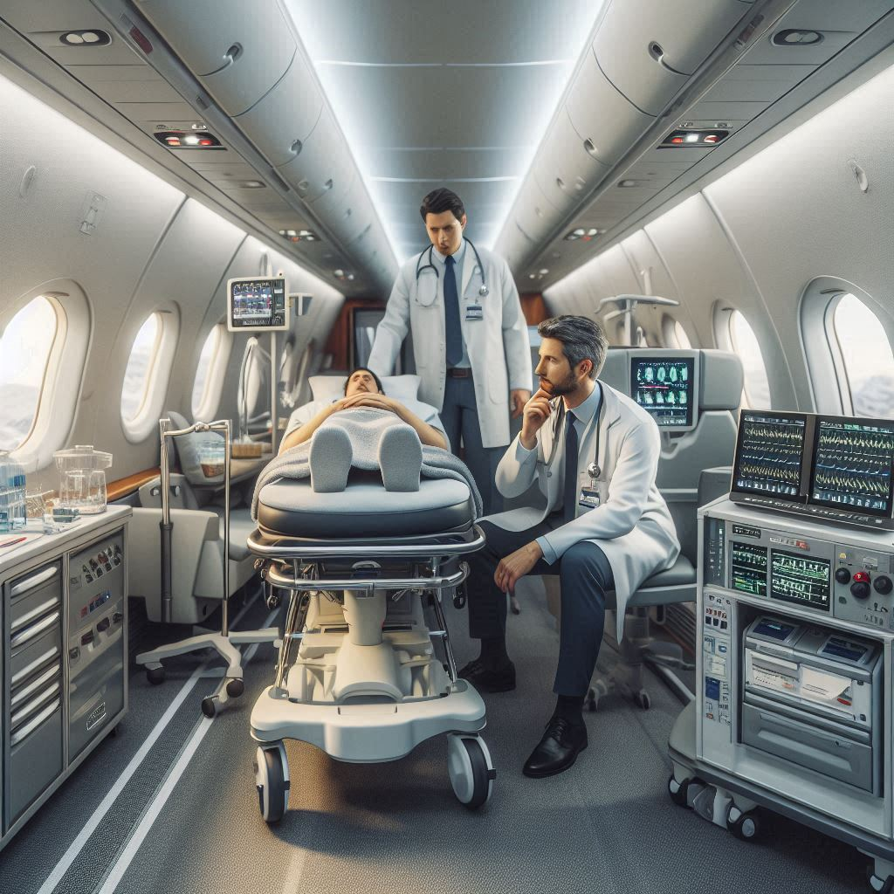
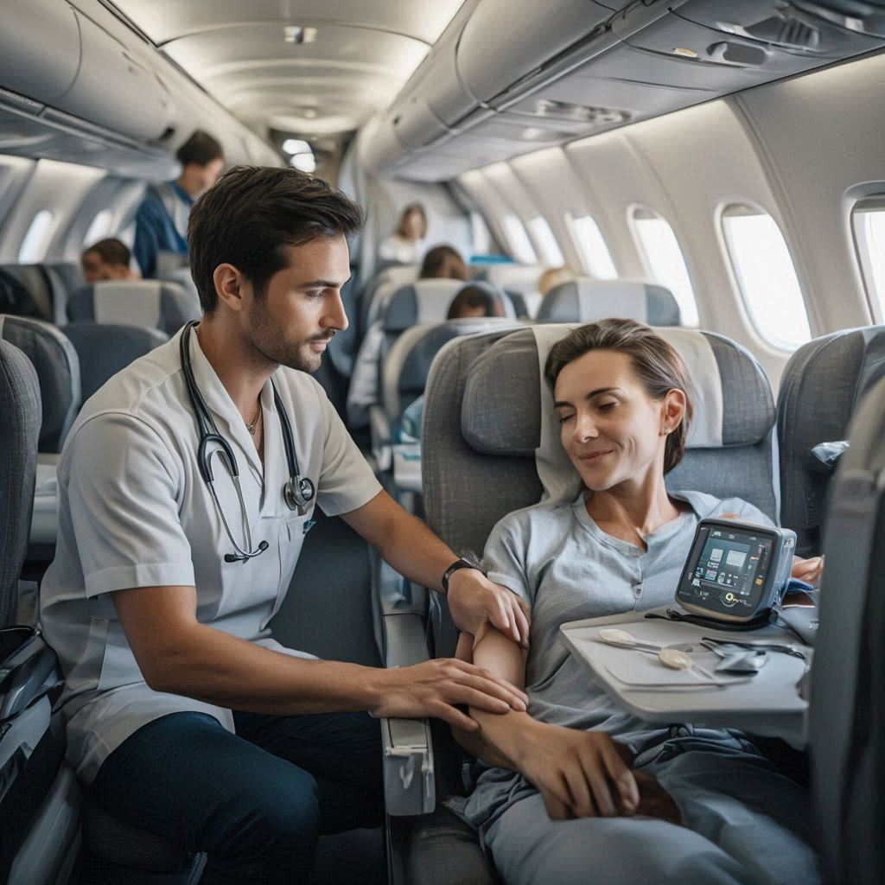

01
🩺
Medical Assessment
Patient condition is reviewed by our medical team to determine escort requirements, medications, and safety considerations.
Professional medical escort services ensuring safe, comfortable, and medically supervised patient transfers across cities and countries. Our trained doctors and paramedics accompany patients throughout the journey, managing care at every step.
Patients travel by commercial flights, trains, or road while being accompanied by a qualified medical professional.
Escorts help with vital monitoring, medication, mobility, and emergency preparedness from start to finish.
Medical Escort services are designed for patients who are stable but still require continuous medical supervision during travel. Unlike air ambulances, this service allows patients to travel on commercial flights, trains, or road transport while being accompanied by a qualified medical professional.
Our medical escorts ensure proper medication management, monitoring of vital signs, mobility assistance, and emergency preparedness. From airport formalities to hospital handover, every detail is carefully managed to deliver a seamless and stress-free experience.

Medical escort services are ideal for patients who do not require intensive care but still need medical attention during travel. This includes elderly patients, post-surgery cases, oncology patients, orthopedic cases, and individuals with chronic illnesses.
A carefully coordinated journey plan ensures patient comfort, medical supervision, and smooth handover at the destination.
Patient condition is reviewed by our medical team to determine escort requirements, medications, and safety considerations.
Selection of appropriate doctor or paramedic, route planning, and coordination with airlines, hospitals, and families.
Continuous monitoring of vitals, medication administration, mobility assistance, and emergency preparedness throughout travel.

Patient is safely transferred and handed over to the receiving hospital or caregiver with complete medical documentation.
Experienced doctors and paramedics trained in patient transport, in-transit monitoring, and emergency response. Our medical escorts are skilled in handling sudden medical changes, administering medications, monitoring vital signs, and ensuring patient safety throughout the journey from departure to final hospital handover.
Experienced doctors and paramedics trained in patient transport and emergency response.
A reliable and affordable alternative to air ambulances for stable patients.
Complete coordination including medical planning, logistics, and documentation.
Personalized medical care focused on comfort, dignity, and safety throughout the journey.
Choosing between a medical escort and an air ambulance depends on the patient’s medical condition, urgency, and level of care required. Below is a clear comparison to help families and healthcare providers make an informed decision.
Ideal for stable patients who require medical supervision during travel but do not need intensive life support. Travel is conducted via commercial flights, trains, or road transport with a qualified medical professional.
Designed for critically ill or unstable patients requiring intensive care, continuous monitoring, and advanced life support during transport.
Our team coordinates medically supervised patient travel with trained escorts, careful planning, and dependable end-to-end support across domestic and international routes.